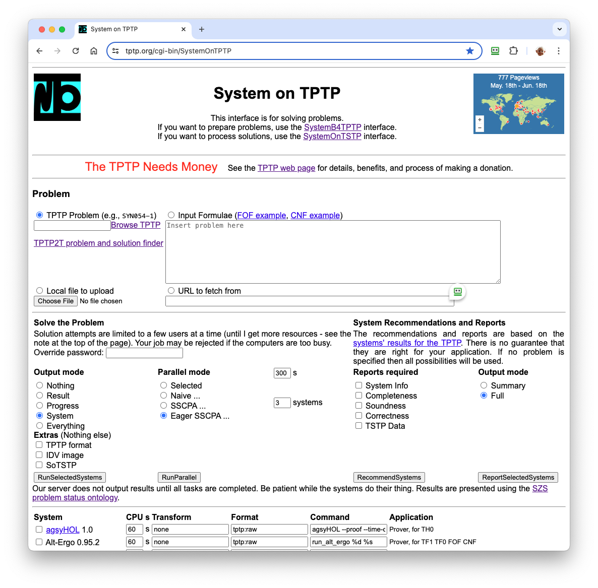

SystemOnTPTP - ATP in your Web Browser
SystemOnTPTP

SystemB4TPTP
- Problem syntax conversion
- Parsers and pretty printing
- THF-TFF-FOF-CNF conversion
- Type checking
- Axiom selection
- TPI interpreter
- Available online at
tptp.org/cgi-bin/SystemB4TPTP
SystemOnTSTP

- Solution syntax conversion
- Parsers and pretty printing
- IDV - Interactive Derivation Viewer
- GDV - Semantic Derivation Verification
- IIV - Interactive Interpretation Viewer
- AGMV - Semantic Model Verification
- AGInTRater - Interestingness rating
- Answer extraction and proof summarization
- Available
online at tptp.org/cgi-bin/SystemOnTSTP